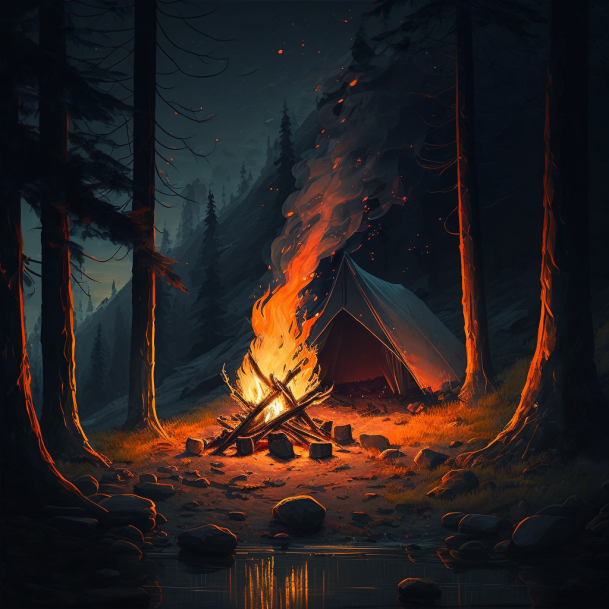

Энар Каст
Campfire Night / Ночь Костра
Достаточно тёмный и мрачный мир. Его центром является небольшой костёр, который горит вечно. Рядом стоит небольшая палатка.
Местность вокруг это холмы и гора, на которых растёт высокий сосновый лес. С гор стекает несколько ручейков, один из них протекает рядом с костром. У подножья горы есть небольшое озеро. В самой горе есть несколько пещер.
Небо тёмное без облаков, звёзд и спутников, а у горизонта виднеется легкая, мрачная и вечная заря. Вся местность окутана легким туманом. Ветер не дует, температура такая, что не тепло и не холодно, нет никаких источников звука, кроме ручьёв воды и костра.
Граница мира окутана плотным и непроницаемым туманом. Проходя сквозь него начинает дуть ветер и чем дальше, тем сильнее. Земля там обрывается и возникает стена из сильного, штормового, непроницаемого ветра. За ним стоит барьер, а за ним Пустота и Общевселенная (Omniverse).
В мире есть двое животных. Первый это некое подобия Саблезубой Кошки или даже Смилодона - большой, около 2,20-2,50 метра в длину, черный, с горящими жёлтыми глазами. Второй это некое подобие Виверны - маленький, около 30-50 сантиметров, частичным оперением, с клювом орла, черный с серым брюхом, и горящими жёлтыми глазами.